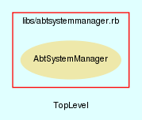

|  |
abtsystemmanager.rb
AbtSystemManager class handles all aspects of the AbTLinux system. It takes care of such tasks as cleanup, fixing, verification and management of settings within the system.
Created by Eric D. Schabell <erics@abtlinux.org> Copyright 2006, GPL.
This file is part of AbTLinux.
AbTLinux is free software; you can redistribute it and/or modify it under the terms of the GNU General Public License as published by the Free Software Foundation; either version 2 of the License, or (at your option) any later version.
AbTLinux is distributed in the hope that it will be useful, but WITHOUT ANY WARRANTY; without even the implied warranty of MERCHANTABILITY or FITNESS FOR A PARTICULAR PURPOSE. See the GNU General Public License for more details.
You should have received a copy of the GNU General Public License along with AbTLinux; if not, write to the Free Software Foundation, Inc., 51 Franklin St, Fifth Floor, Boston, MA 02110-1301 USA
- cleanup_logs
- cleanup_package_sources
- fix_package
- new
- package_installed
- set_central_repo
- set_package_tree_location
- verify_installed_files
- verify_package_depends
- verify_package_integrity
- verify_symlinks
Constructor for the System manager
RETURN AbtSystemManager - an initialized AbtSystemManager object.
[ show source ]
# File abtsystemmanager.rb, line 68
68: def initialize
69: end
All logs for packages not in install list are cleaned off the system.
RETURN boolean - True if completes without error, otherwise false.
[ show source ]
# File abtsystemmanager.rb, line 88
88: def cleanup_logs
89: return false
90: end
Removes all sources for packages that are not currently installed. Makes use of install listing to determine package sources to keep.
RETURN boolean - True if completes without error, otherwise false.
[ show source ]
# File abtsystemmanager.rb, line 78
78: def cleanup_package_sources
79: return false
80: end
Fixes the given package.
PARAM String - Package name.
RETURN boolean - True if completes without error, otherwise false.
[ show source ]
# File abtsystemmanager.rb, line 172
172: def fix_package( package )
173: return false
174: end
Checks if the given package is installed by checking for entry in the installed directory.
PARAM String - Package name.
RETURN boolean - True if package installed, otherwise false.
[ show source ]
# File abtsystemmanager.rb, line 210
210: def package_installed( package )
211: require "#{$PACKAGE_PATH}#{package}"
212: sw = eval( "#{package.capitalize}.new" )
213: details = sw.details
214:
215: if ( found_entry( $PACKAGE_INSTALLED, sw.srcDir ) )
216: return true
217: end
218:
219: return false
220: end
Sets the URI of a central repository for pre-compiled packages.
PARAM String - the URI where the central repository is located.
RETURN boolean - True if the URI is set, otherwise false.
[ show source ]
# File abtsystemmanager.rb, line 184
184: def set_central_repo( uri )
185: return false
186: end
Sets the location where the package tree is to be downloaded from, can be set to a local location.
PARAM String - the location of the package tree.
RETURN boolean - True if the package tree location is set, otherwise false.
[ show source ]
# File abtsystemmanager.rb, line 197
197: def set_package_tree_location( location )
198: return false
199: end
Checks if files from given package install list are actually installed.
PARAM String - Package name.
RETURN boolean - True if no installed files are missing, otherwise false.
[ show source ]
# File abtsystemmanager.rb, line 100
100: def verify_installed_files( package )
101: logger = AbtLogManager.new
102: system = AbtSystemManager.new
103:
104: if !system.package_installed( package )
105: logger.to_journal( "Unable to verify installed files for #{package}, it's not installed!")
106: return false
107: end
108:
109: if !File.exist?( logger.get_log( package, 'install' ) )
110: logger.to_journal( "Unable to verify installed files for #{package}, installed package but install log missing!" )
111: return false
112: end
113:
114: failure = false # marker after checking all files to determine failure.
115: File.open( logger.get_log( package, "install" ) ).each { |line|
116: if !File.exist?( line.chomp )
117: logger.to_journal( "The file : #{line.chomp} is missing for #{package}." )
118: failure = true
119: end
120: }
121: return false if failure
122:
123: # all files passed check.
124: return true
125: end
Checks the given packages dependencies for missing or broken dependencies.
PARAM String - Package name.
RETURN boolean - True if dependencies intact, otherwise false.
[ show source ]
# File abtsystemmanager.rb, line 147
147: def verify_package_depends( package )
148: return false
149: end
Checks the given packages installed files against the integrity log for changes to installed files.
PARAM String - Package name.
RETURN hash - Empty hash if no problems found, otherwise hash of problem files and their encountered errors.
[ show source ]
# File abtsystemmanager.rb, line 160
160: def verify_package_integrity( package )
161: return false
162: end
Checks if given packages installed symlinks are broken or missing.
PARAM String - Package name.
RETURN boolean - True if no symlinks found missing or broken, otherwise false.
[ show source ]
# File abtsystemmanager.rb, line 135
135: def verify_symlinks( package )
136: return false
137: end